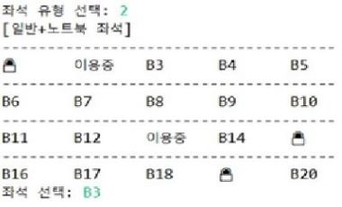
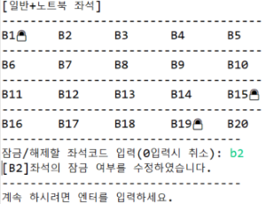

[ 메인 화면 ]

[ 좌석 정보 조회 - 대여 ]
[ 좌석관리 - 수정 ]
AllNightStudyCafe
[스터디 카페 시스템]
Java 콘솔 프로젝트 - 쌍용교육센터
2021.05.03 ~ 2021.05.11 (7일간)
| 장예지 | 메인 화면 요금 출력, 회원가입, 좌석 정보 조회/대여/결제, 마이페이지(내 정보 조회), (관리자) 좌석관리(등록, 수정), 요청 답글 등록 서비스 구현 |
| 전수정 | 회원, 비회원, 관리자 로그인, 퇴실 서비스 구현 |
| 정병은 | 대여물품 조회/대여, 주문정보조회/결제, 요청/건의 조회 및 등록, (관리자)블랙리스트 지정/해제, 회원정보조회/검색 서비스 구현 |
| 고혜선 | 사물함 대여, 스터디 룸 예약 서비스 구현 |
이 프로젝트는 Java 언어만을 이용하여 진행하였습니다. 교육센터에 들어가 처음으로 한 프로젝트였기 때문에 비전공자와 합을 맞추는 것도 처음이었고, 그만큼 더 의미있는 프로젝트로 기억에 남은 것 같습니다.
자바만을 이용하여 프로젝트를 진행하였기에 파일에 더미 데이터를 만들어 BufferedReader, FileReader을 통해 데이터를 입출력하는 방식으로 진행하였습니다. 프로젝트 주제는 주변에서 자주 접하게 되는 소재인 스터디카페의 키오스크를 본따 만들게 되었습니다. 콘솔로만 출력이 되다보니 디자인적인 요소를 많이 신경쓸수는 없었지만 그래도 사용자에게 보다 편한 UI를 제공하기 위해 노력하였습니다. 좌석 같은 경우 기존 좌석 배치와 비슷한 형태로 구현하여 출력하였고, 사용중인 좌석은 ‘이용중’이라는 표시를, 사용할 수 없는 좌석은 ‘자물쇠 이모티콘’을 통해 알아보기 쉽게 표현하였습니다.
자바를 다시 학습함으로써 기초를 잡는데 도움이 되었고 부족하던 자바 이론을 습득하게 된 계기가 되었습니다. 또한 처음 말한것과 같이 비전공자와 합을 맞추어 프로젝트를 하다 보니 전공자로써 조금은 이끌어가고 도움을 주며 같이 헤쳐나가는 모습에 있어 성취감을 느낀 기회가 되었던 것 같습니다. 단순한 코딩이 아닌 사용자의 편리성을 따지며 최대한 코드의 중복없이 클린 코드를 작성하기 위해 노력하였고, 추후에는 자바의 장점인 상속이나, 추상화에 관련된 부분에 대한 공부를 더 하여 자바를 더욱 능숙하게 사용하고 싶다는 생각을 가지게 한 프로젝트였습니다.